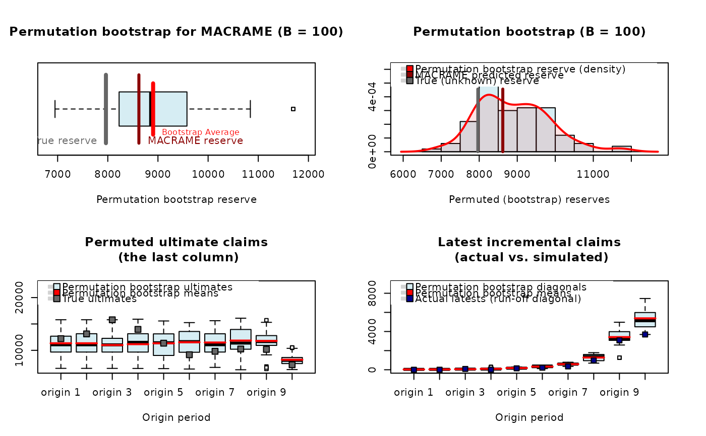

Permutation Bootstrap Reserve (PARALLAX, REACT, MACRAME)
permuteReserve.RdThe function takes a completed run-off triangle provided either by some classical parametric reserving technique (ODP model, Mack model, or Tweedie model) or some functional-based alternative (PARALLAX, REACT, or MACRAME) and estimates the overall reserve distribution in terms of the permutation bootstrap approach proposed in Maciak, Mizera, and Pešta (2022).
Arguments
- object
an object which is the result of some functional-based reserving method implemented in the ProfileLadder package (functions
parallelReserve()andmcReserve()in particular) or some parametric approach from the ChainLadder package (specifically the functionschainladder(),glmReserve(),tweedieReserve(), andMackChainLadder()). The followingobject's classes are allowed:profileLadder,ChainLadder,glmReserve,tweedieReserve, andMackChainLadder.- B
number of the bootstrap permutations to be performed (by DEFAULT the number of permutations is set to
B = 500)- std
logical to indicate whether the run-off triangle should be standardized by the first column increments (
TRUEby DEFAULT) or not (std = FALSE).For more details about the triangle standardization, see Maciak, Mizera, and Pešta (2022)- quantile
quantile level for the
BootVar.characteristic of the bootstrapped distribution (the DEFAULT choicequantile = 0.995is explicitly required by the Solvency II principle used by actuaries in practice)- adjustMC
logical (
TRUEby DEFAULT) to indicate whether the Markov chain states and the corresponding breaks should be adjusted for every bootstrap permutation or the same set of Markov states and breaks is used for each permuted run-off triangle (only applies if the inputobjectis an output of the MACRAME algorithm—the functionmcReserve())- pb
logical (
TRUEby DEFAULT) to indicate whether a progress bar for bootstrap resampling should be used or not (required the R packagepbapply) to be installed
Value
An object of the class permutedReserve which is a list with
the following elements:
- eSummary
numeric vector with four values summarizing the estimated reserve: Paid amount (i.e., the sum of the last observed diagonal in the given cumulative run-off triangle); Estimated ultimate (i.e., the sum of the last column in the completed cumulative triangle); Estimated reserve (i.e., the sum of the last column in the completed cumulative triangle minus the sum of the last observed diagonal); True reserve if a completed (true) run-off triangle is available
- pSummary
numeric vector with four values summarizing the overall reserve distribution:
Boot.Meangives the verage ofBpermutation bootstrap reserves;Std.Er.provides the corresponding standard error ofBpermutation bootstrap reserves; The value ofBootCov%stands for a percentage proportion between the standard error and the average; Finally,BootVar.995provides the estimated 0.995 quantile (by DEFAULT) of the bootstrap reserve distribution (forquantile = 0.995and, otherwise, it is modified acordingly) given relatively with respect to the permutation bootstrapped mean reserve- pReserves
a numeric vector of the length
Bwith the estimated (permuted) reserves for each row-permuted run-off triangle inBindependent Monte Carlo simulation runs- pUltimates
A matrix of the dimensions
B x n(wherenstands for the number of the origin/development periods) withBsimulated ultimate payments – the last column in the completed run-off triangle- pLatest
A matrix of the dimensions
B x n(wherenagain stands for the number of the origin/development periods) withBsimulated incremental diagonals- pLatestCum
A matrix of the dimensions
B x n(nbeing the number of the origin/development periods) withBsimulated cumulative diagonals- pFirst
A matrix of the dimension
B x n(nbeing the number of the origin/development periods) withBsimulated first payment columns (all columns are identical forstd = TRUE)- Triangle
The input run-off triangle
- FullTriangle
The completed run-off triangle by using one of the PARALLAX, REACT, or MACRAME estimation method
- trueComplete
The true complete run-off triangle (if available) and
NAvalue otherwise- info
a numeric vector summarizing the bootstrap computational efficiency: In particular, the OS/Architecture type, the number of permutations (
B), the input run-off triangle dimension (n) and the computation time needed for the permutation bootstrap calculations
References
Maciak, M., Mizera, I., and Pešta, M. (2022). Functional Profile Techniques for Claims Reserving. ASTIN Bulletin, 52(2), 449-482. DOI:10.1017/asb.2022.4
European Parliament and Council (2009). Directive 2009/138/EC of
the European Parliament and of the Council of 25 November 2009 on the taking-up
and pursuit of the business of Insurance and Reinsurance (Solvency II). Official
Journal of the European Union, 1–155.
https://data.europa.eu/eli/dir/2009/138/oj
Examples
## REACT algorithm and the permutation bootstrap reserve
data(CameronMutual)
output <- parallelReserve(CameronMutual, method = "react")
summary(permuteReserve(output, B = 100))
#>
| | 0 % ~calculating
|> | 1 % ~00s
|> | 2 % ~00s
|>> | 3 % ~00s
|>> | 4 % ~00s
|>>> | 5 % ~00s
|>>> | 6 % ~00s
|>>>> | 7 % ~00s
|>>>> | 8 % ~00s
|>>>> | 9 % ~00s
|>>>>> | 10% ~00s
|>>>>> | 11% ~00s
|>>>>>> | 12% ~00s
|>>>>>> | 13% ~00s
|>>>>>>> | 14% ~00s
|>>>>>>> | 15% ~00s
|>>>>>>> | 16% ~00s
|>>>>>>>> | 17% ~00s
|>>>>>>>> | 18% ~00s
|>>>>>>>>> | 19% ~00s
|>>>>>>>>> | 20% ~00s
|>>>>>>>>>> | 21% ~00s
|>>>>>>>>>> | 22% ~00s
|>>>>>>>>>> | 23% ~00s
|>>>>>>>>>>> | 24% ~00s
|>>>>>>>>>>> | 25% ~00s
|>>>>>>>>>>>> | 26% ~00s
|>>>>>>>>>>>> | 27% ~00s
|>>>>>>>>>>>>> | 28% ~00s
|>>>>>>>>>>>>> | 29% ~00s
|>>>>>>>>>>>>> | 30% ~00s
|>>>>>>>>>>>>>> | 31% ~00s
|>>>>>>>>>>>>>> | 32% ~00s
|>>>>>>>>>>>>>>> | 33% ~00s
|>>>>>>>>>>>>>>> | 34% ~00s
|>>>>>>>>>>>>>>>> | 35% ~00s
|>>>>>>>>>>>>>>>> | 36% ~00s
|>>>>>>>>>>>>>>>> | 37% ~00s
|>>>>>>>>>>>>>>>>> | 38% ~00s
|>>>>>>>>>>>>>>>>> | 39% ~00s
|>>>>>>>>>>>>>>>>>> | 40% ~00s
|>>>>>>>>>>>>>>>>>> | 41% ~00s
|>>>>>>>>>>>>>>>>>>> | 42% ~00s
|>>>>>>>>>>>>>>>>>>> | 43% ~00s
|>>>>>>>>>>>>>>>>>>> | 44% ~00s
|>>>>>>>>>>>>>>>>>>>> | 45% ~00s
|>>>>>>>>>>>>>>>>>>>> | 46% ~00s
|>>>>>>>>>>>>>>>>>>>>> | 47% ~00s
|>>>>>>>>>>>>>>>>>>>>> | 48% ~00s
|>>>>>>>>>>>>>>>>>>>>>> | 49% ~00s
|>>>>>>>>>>>>>>>>>>>>>> | 50% ~00s
|>>>>>>>>>>>>>>>>>>>>>> | 51% ~00s
|>>>>>>>>>>>>>>>>>>>>>>> | 52% ~00s
|>>>>>>>>>>>>>>>>>>>>>>> | 53% ~00s
|>>>>>>>>>>>>>>>>>>>>>>>> | 54% ~00s
|>>>>>>>>>>>>>>>>>>>>>>>> | 55% ~00s
|>>>>>>>>>>>>>>>>>>>>>>>>> | 56% ~00s
|>>>>>>>>>>>>>>>>>>>>>>>>> | 57% ~00s
|>>>>>>>>>>>>>>>>>>>>>>>>> | 58% ~00s
|>>>>>>>>>>>>>>>>>>>>>>>>>> | 59% ~00s
|>>>>>>>>>>>>>>>>>>>>>>>>>> | 60% ~00s
|>>>>>>>>>>>>>>>>>>>>>>>>>>> | 61% ~00s
|>>>>>>>>>>>>>>>>>>>>>>>>>>> | 62% ~00s
|>>>>>>>>>>>>>>>>>>>>>>>>>>>> | 63% ~00s
|>>>>>>>>>>>>>>>>>>>>>>>>>>>> | 64% ~00s
|>>>>>>>>>>>>>>>>>>>>>>>>>>>> | 65% ~00s
|>>>>>>>>>>>>>>>>>>>>>>>>>>>>> | 66% ~00s
|>>>>>>>>>>>>>>>>>>>>>>>>>>>>> | 67% ~00s
|>>>>>>>>>>>>>>>>>>>>>>>>>>>>>> | 68% ~00s
|>>>>>>>>>>>>>>>>>>>>>>>>>>>>>> | 69% ~00s
|>>>>>>>>>>>>>>>>>>>>>>>>>>>>>>> | 70% ~00s
|>>>>>>>>>>>>>>>>>>>>>>>>>>>>>>> | 71% ~00s
|>>>>>>>>>>>>>>>>>>>>>>>>>>>>>>> | 72% ~00s
|>>>>>>>>>>>>>>>>>>>>>>>>>>>>>>>> | 73% ~00s
|>>>>>>>>>>>>>>>>>>>>>>>>>>>>>>>> | 74% ~00s
|>>>>>>>>>>>>>>>>>>>>>>>>>>>>>>>>> | 75% ~00s
|>>>>>>>>>>>>>>>>>>>>>>>>>>>>>>>>> | 76% ~00s
|>>>>>>>>>>>>>>>>>>>>>>>>>>>>>>>>>> | 77% ~00s
|>>>>>>>>>>>>>>>>>>>>>>>>>>>>>>>>>> | 78% ~00s
|>>>>>>>>>>>>>>>>>>>>>>>>>>>>>>>>>> | 79% ~00s
|>>>>>>>>>>>>>>>>>>>>>>>>>>>>>>>>>>> | 80% ~00s
|>>>>>>>>>>>>>>>>>>>>>>>>>>>>>>>>>>> | 81% ~00s
|>>>>>>>>>>>>>>>>>>>>>>>>>>>>>>>>>>>> | 82% ~00s
|>>>>>>>>>>>>>>>>>>>>>>>>>>>>>>>>>>>> | 83% ~00s
|>>>>>>>>>>>>>>>>>>>>>>>>>>>>>>>>>>>>> | 84% ~00s
|>>>>>>>>>>>>>>>>>>>>>>>>>>>>>>>>>>>>> | 85% ~00s
|>>>>>>>>>>>>>>>>>>>>>>>>>>>>>>>>>>>>> | 86% ~00s
|>>>>>>>>>>>>>>>>>>>>>>>>>>>>>>>>>>>>>> | 87% ~00s
|>>>>>>>>>>>>>>>>>>>>>>>>>>>>>>>>>>>>>> | 88% ~00s
|>>>>>>>>>>>>>>>>>>>>>>>>>>>>>>>>>>>>>>> | 89% ~00s
|>>>>>>>>>>>>>>>>>>>>>>>>>>>>>>>>>>>>>>> | 90% ~00s
|>>>>>>>>>>>>>>>>>>>>>>>>>>>>>>>>>>>>>>>> | 91% ~00s
|>>>>>>>>>>>>>>>>>>>>>>>>>>>>>>>>>>>>>>>> | 92% ~00s
|>>>>>>>>>>>>>>>>>>>>>>>>>>>>>>>>>>>>>>>> | 93% ~00s
|>>>>>>>>>>>>>>>>>>>>>>>>>>>>>>>>>>>>>>>>> | 94% ~00s
|>>>>>>>>>>>>>>>>>>>>>>>>>>>>>>>>>>>>>>>>> | 95% ~00s
|>>>>>>>>>>>>>>>>>>>>>>>>>>>>>>>>>>>>>>>>>> | 96% ~00s
|>>>>>>>>>>>>>>>>>>>>>>>>>>>>>>>>>>>>>>>>>> | 97% ~00s
|>>>>>>>>>>>>>>>>>>>>>>>>>>>>>>>>>>>>>>>>>>>| 98% ~00s
|>>>>>>>>>>>>>>>>>>>>>>>>>>>>>>>>>>>>>>>>>>>| 99% ~00s
|>>>>>>>>>>>>>>>>>>>>>>>>>>>>>>>>>>>>>>>>>>>| 100% elapsed=00s
#> REACT based reserve prediction (with B = 100 bootstrap permutations)
#> First Latest Dev.To.Date Ultimate IBNR S.E CV
#> 2 5984 13113 1.0000000 13113 0 0.000000 NaN
#> 3 7452 15720 0.9997456 15724 4 3.680721 0.9201803
#> 4 7115 13872 0.9937675 13959 87 29.217040 0.3358280
#> 5 5753 11282 0.9912142 11382 100 88.362555 0.8836256
#> 6 3937 8757 0.9725677 9004 247 103.735962 0.4199837
#> 7 5127 9325 0.9528919 9786 461 115.944697 0.2515069
#> 8 5046 8984 0.9172963 9794 810 167.714923 0.2070555
#> 9 5129 8202 0.8210210 9990 1788 382.052755 0.2136760
#> 10 3689 3689 0.4314620 8550 4861 530.130235 0.1090579
#> total 49232 92944 0.9174942 101302 8358 1012.162229 0.1211010
#>
#> Overall reserve distribution
#> Boot.Mean Std.Er. BootCov% BootVar.995
#> 10332.684421 1012.162229 9.795733 1.236083
#>
#> The REACT predicted reserve represents the 1.98% quantile of the reserve distribution
#> Bootstrap simulated reserves beyond 2σ rule: 4 (out of 100)
#>
## MACRAME algorithm with a pre-specified number of states using the same MC
## states and the same break for each permuted run-off triangle
output <- mcReserve(CameronMutual, states = 5)
plot(permuteReserve(output, B = 100, adjustMC = FALSE))
#>
| | 0 % ~calculating
|> | 1 % ~01s
|> | 2 % ~01s
|>> | 3 % ~01s
|>> | 4 % ~01s
|>>> | 5 % ~01s
|>>> | 6 % ~01s
|>>>> | 7 % ~01s
|>>>> | 8 % ~01s
|>>>> | 9 % ~01s
|>>>>> | 10% ~01s
|>>>>> | 11% ~01s
|>>>>>> | 12% ~01s
|>>>>>> | 13% ~01s
|>>>>>>> | 14% ~01s
|>>>>>>> | 15% ~01s
|>>>>>>> | 16% ~01s
|>>>>>>>> | 17% ~01s
|>>>>>>>> | 18% ~01s
|>>>>>>>>> | 19% ~01s
|>>>>>>>>> | 20% ~01s
|>>>>>>>>>> | 21% ~01s
|>>>>>>>>>> | 22% ~01s
|>>>>>>>>>> | 23% ~01s
|>>>>>>>>>>> | 24% ~01s
|>>>>>>>>>>> | 25% ~01s
|>>>>>>>>>>>> | 26% ~01s
|>>>>>>>>>>>> | 27% ~00s
|>>>>>>>>>>>>> | 28% ~00s
|>>>>>>>>>>>>> | 29% ~00s
|>>>>>>>>>>>>> | 30% ~00s
|>>>>>>>>>>>>>> | 31% ~00s
|>>>>>>>>>>>>>> | 32% ~00s
|>>>>>>>>>>>>>>> | 33% ~00s
|>>>>>>>>>>>>>>> | 34% ~00s
|>>>>>>>>>>>>>>>> | 35% ~00s
|>>>>>>>>>>>>>>>> | 36% ~00s
|>>>>>>>>>>>>>>>> | 37% ~00s
|>>>>>>>>>>>>>>>>> | 38% ~00s
|>>>>>>>>>>>>>>>>> | 39% ~00s
|>>>>>>>>>>>>>>>>>> | 40% ~00s
|>>>>>>>>>>>>>>>>>> | 41% ~00s
|>>>>>>>>>>>>>>>>>>> | 42% ~00s
|>>>>>>>>>>>>>>>>>>> | 43% ~00s
|>>>>>>>>>>>>>>>>>>> | 44% ~00s
|>>>>>>>>>>>>>>>>>>>> | 45% ~00s
|>>>>>>>>>>>>>>>>>>>> | 46% ~00s
|>>>>>>>>>>>>>>>>>>>>> | 47% ~00s
|>>>>>>>>>>>>>>>>>>>>> | 48% ~00s
|>>>>>>>>>>>>>>>>>>>>>> | 49% ~00s
|>>>>>>>>>>>>>>>>>>>>>> | 50% ~00s
|>>>>>>>>>>>>>>>>>>>>>> | 51% ~00s
|>>>>>>>>>>>>>>>>>>>>>>> | 52% ~00s
|>>>>>>>>>>>>>>>>>>>>>>> | 53% ~00s
|>>>>>>>>>>>>>>>>>>>>>>>> | 54% ~00s
|>>>>>>>>>>>>>>>>>>>>>>>> | 55% ~00s
|>>>>>>>>>>>>>>>>>>>>>>>>> | 56% ~00s
|>>>>>>>>>>>>>>>>>>>>>>>>> | 57% ~00s
|>>>>>>>>>>>>>>>>>>>>>>>>> | 58% ~00s
|>>>>>>>>>>>>>>>>>>>>>>>>>> | 59% ~00s
|>>>>>>>>>>>>>>>>>>>>>>>>>> | 60% ~00s
|>>>>>>>>>>>>>>>>>>>>>>>>>>> | 61% ~00s
|>>>>>>>>>>>>>>>>>>>>>>>>>>> | 62% ~00s
|>>>>>>>>>>>>>>>>>>>>>>>>>>>> | 63% ~00s
|>>>>>>>>>>>>>>>>>>>>>>>>>>>> | 64% ~00s
|>>>>>>>>>>>>>>>>>>>>>>>>>>>> | 65% ~00s
|>>>>>>>>>>>>>>>>>>>>>>>>>>>>> | 66% ~00s
|>>>>>>>>>>>>>>>>>>>>>>>>>>>>> | 67% ~00s
|>>>>>>>>>>>>>>>>>>>>>>>>>>>>>> | 68% ~00s
|>>>>>>>>>>>>>>>>>>>>>>>>>>>>>> | 69% ~00s
|>>>>>>>>>>>>>>>>>>>>>>>>>>>>>>> | 70% ~00s
|>>>>>>>>>>>>>>>>>>>>>>>>>>>>>>> | 71% ~00s
|>>>>>>>>>>>>>>>>>>>>>>>>>>>>>>> | 72% ~00s
|>>>>>>>>>>>>>>>>>>>>>>>>>>>>>>>> | 73% ~00s
|>>>>>>>>>>>>>>>>>>>>>>>>>>>>>>>> | 74% ~00s
|>>>>>>>>>>>>>>>>>>>>>>>>>>>>>>>>> | 75% ~00s
|>>>>>>>>>>>>>>>>>>>>>>>>>>>>>>>>> | 76% ~00s
|>>>>>>>>>>>>>>>>>>>>>>>>>>>>>>>>>> | 77% ~00s
|>>>>>>>>>>>>>>>>>>>>>>>>>>>>>>>>>> | 78% ~00s
|>>>>>>>>>>>>>>>>>>>>>>>>>>>>>>>>>> | 79% ~00s
|>>>>>>>>>>>>>>>>>>>>>>>>>>>>>>>>>>> | 80% ~00s
|>>>>>>>>>>>>>>>>>>>>>>>>>>>>>>>>>>> | 81% ~00s
|>>>>>>>>>>>>>>>>>>>>>>>>>>>>>>>>>>>> | 82% ~00s
|>>>>>>>>>>>>>>>>>>>>>>>>>>>>>>>>>>>> | 83% ~00s
|>>>>>>>>>>>>>>>>>>>>>>>>>>>>>>>>>>>>> | 84% ~00s
|>>>>>>>>>>>>>>>>>>>>>>>>>>>>>>>>>>>>> | 85% ~00s
|>>>>>>>>>>>>>>>>>>>>>>>>>>>>>>>>>>>>> | 86% ~00s
|>>>>>>>>>>>>>>>>>>>>>>>>>>>>>>>>>>>>>> | 87% ~00s
|>>>>>>>>>>>>>>>>>>>>>>>>>>>>>>>>>>>>>> | 88% ~00s
|>>>>>>>>>>>>>>>>>>>>>>>>>>>>>>>>>>>>>>> | 89% ~00s
|>>>>>>>>>>>>>>>>>>>>>>>>>>>>>>>>>>>>>>> | 90% ~00s
|>>>>>>>>>>>>>>>>>>>>>>>>>>>>>>>>>>>>>>>> | 91% ~00s
|>>>>>>>>>>>>>>>>>>>>>>>>>>>>>>>>>>>>>>>> | 92% ~00s
|>>>>>>>>>>>>>>>>>>>>>>>>>>>>>>>>>>>>>>>> | 93% ~00s
|>>>>>>>>>>>>>>>>>>>>>>>>>>>>>>>>>>>>>>>>> | 94% ~00s
|>>>>>>>>>>>>>>>>>>>>>>>>>>>>>>>>>>>>>>>>> | 95% ~00s
|>>>>>>>>>>>>>>>>>>>>>>>>>>>>>>>>>>>>>>>>>> | 96% ~00s
|>>>>>>>>>>>>>>>>>>>>>>>>>>>>>>>>>>>>>>>>>> | 97% ~00s
|>>>>>>>>>>>>>>>>>>>>>>>>>>>>>>>>>>>>>>>>>>>| 98% ~00s
|>>>>>>>>>>>>>>>>>>>>>>>>>>>>>>>>>>>>>>>>>>>| 99% ~00s
|>>>>>>>>>>>>>>>>>>>>>>>>>>>>>>>>>>>>>>>>>>>| 100% elapsed=01s

## Permutation bootstrap applied to a completed run-off triangle
## obtained by a parametric Over-dispersed Poisson model (from ChainLadder pkg)
library("ChainLadder")
#>
#> Welcome to ChainLadder version 0.2.20
#>
#>
#> To cite package ‘ChainLadder’ in publications use:
#>
#> Gesmann M, Murphy D, Zhang Y, Carrato A, Wuthrich M, Concina F, Dal
#> Moro E (2025). _ChainLadder: Statistical Methods and Models for
#> Claims Reserving in General Insurance_. R package version 0.2.20,
#> <https://mages.github.io/ChainLadder/>.
#>
#> To suppress this message use:
#> suppressPackageStartupMessages(library(ChainLadder))
output <- permuteReserve(glmReserve(MW2008), B = 100)
#>
| | 0 % ~calculating
|> | 1 % ~02s
|> | 2 % ~02s
|>> | 3 % ~02s
|>> | 4 % ~02s
|>>> | 5 % ~02s
|>>> | 6 % ~02s
|>>>> | 7 % ~02s
|>>>> | 8 % ~02s
|>>>> | 9 % ~02s
|>>>>> | 10% ~02s
|>>>>> | 11% ~02s
|>>>>>> | 12% ~02s
|>>>>>> | 13% ~02s
|>>>>>>> | 14% ~02s
|>>>>>>> | 15% ~02s
|>>>>>>> | 16% ~02s
|>>>>>>>> | 17% ~02s
|>>>>>>>> | 18% ~02s
|>>>>>>>>> | 19% ~02s
|>>>>>>>>> | 20% ~02s
|>>>>>>>>>> | 21% ~01s
|>>>>>>>>>> | 22% ~01s
|>>>>>>>>>> | 23% ~01s
|>>>>>>>>>>> | 24% ~01s
|>>>>>>>>>>> | 25% ~01s
|>>>>>>>>>>>> | 26% ~01s
|>>>>>>>>>>>> | 27% ~01s
|>>>>>>>>>>>>> | 28% ~01s
|>>>>>>>>>>>>> | 29% ~01s
|>>>>>>>>>>>>> | 30% ~01s
|>>>>>>>>>>>>>> | 31% ~01s
|>>>>>>>>>>>>>> | 32% ~01s
|>>>>>>>>>>>>>>> | 33% ~01s
|>>>>>>>>>>>>>>> | 34% ~01s
|>>>>>>>>>>>>>>>> | 35% ~01s
|>>>>>>>>>>>>>>>> | 36% ~01s
|>>>>>>>>>>>>>>>> | 37% ~01s
|>>>>>>>>>>>>>>>>> | 38% ~01s
|>>>>>>>>>>>>>>>>> | 39% ~01s
|>>>>>>>>>>>>>>>>>> | 40% ~01s
|>>>>>>>>>>>>>>>>>> | 41% ~01s
|>>>>>>>>>>>>>>>>>>> | 42% ~01s
|>>>>>>>>>>>>>>>>>>> | 43% ~01s
|>>>>>>>>>>>>>>>>>>> | 44% ~01s
|>>>>>>>>>>>>>>>>>>>> | 45% ~01s
|>>>>>>>>>>>>>>>>>>>> | 46% ~01s
|>>>>>>>>>>>>>>>>>>>>> | 47% ~01s
|>>>>>>>>>>>>>>>>>>>>> | 48% ~01s
|>>>>>>>>>>>>>>>>>>>>>> | 49% ~01s
|>>>>>>>>>>>>>>>>>>>>>> | 50% ~01s
|>>>>>>>>>>>>>>>>>>>>>> | 51% ~01s
|>>>>>>>>>>>>>>>>>>>>>>> | 52% ~01s
|>>>>>>>>>>>>>>>>>>>>>>> | 53% ~01s
|>>>>>>>>>>>>>>>>>>>>>>>> | 54% ~01s
|>>>>>>>>>>>>>>>>>>>>>>>> | 55% ~01s
|>>>>>>>>>>>>>>>>>>>>>>>>> | 56% ~01s
|>>>>>>>>>>>>>>>>>>>>>>>>> | 57% ~01s
|>>>>>>>>>>>>>>>>>>>>>>>>> | 58% ~01s
|>>>>>>>>>>>>>>>>>>>>>>>>>> | 59% ~01s
|>>>>>>>>>>>>>>>>>>>>>>>>>> | 60% ~01s
|>>>>>>>>>>>>>>>>>>>>>>>>>>> | 61% ~01s
|>>>>>>>>>>>>>>>>>>>>>>>>>>> | 62% ~01s
|>>>>>>>>>>>>>>>>>>>>>>>>>>>> | 63% ~01s
|>>>>>>>>>>>>>>>>>>>>>>>>>>>> | 64% ~01s
|>>>>>>>>>>>>>>>>>>>>>>>>>>>> | 65% ~01s
|>>>>>>>>>>>>>>>>>>>>>>>>>>>>> | 66% ~01s
|>>>>>>>>>>>>>>>>>>>>>>>>>>>>> | 67% ~01s
|>>>>>>>>>>>>>>>>>>>>>>>>>>>>>> | 68% ~01s
|>>>>>>>>>>>>>>>>>>>>>>>>>>>>>> | 69% ~01s
|>>>>>>>>>>>>>>>>>>>>>>>>>>>>>>> | 70% ~01s
|>>>>>>>>>>>>>>>>>>>>>>>>>>>>>>> | 71% ~01s
|>>>>>>>>>>>>>>>>>>>>>>>>>>>>>>> | 72% ~01s
|>>>>>>>>>>>>>>>>>>>>>>>>>>>>>>>> | 73% ~01s
|>>>>>>>>>>>>>>>>>>>>>>>>>>>>>>>> | 74% ~00s
|>>>>>>>>>>>>>>>>>>>>>>>>>>>>>>>>> | 75% ~00s
|>>>>>>>>>>>>>>>>>>>>>>>>>>>>>>>>> | 76% ~00s
|>>>>>>>>>>>>>>>>>>>>>>>>>>>>>>>>>> | 77% ~00s
|>>>>>>>>>>>>>>>>>>>>>>>>>>>>>>>>>> | 78% ~00s
|>>>>>>>>>>>>>>>>>>>>>>>>>>>>>>>>>> | 79% ~00s
|>>>>>>>>>>>>>>>>>>>>>>>>>>>>>>>>>>> | 80% ~00s
|>>>>>>>>>>>>>>>>>>>>>>>>>>>>>>>>>>> | 81% ~00s
|>>>>>>>>>>>>>>>>>>>>>>>>>>>>>>>>>>>> | 82% ~00s
|>>>>>>>>>>>>>>>>>>>>>>>>>>>>>>>>>>>> | 83% ~00s
|>>>>>>>>>>>>>>>>>>>>>>>>>>>>>>>>>>>>> | 84% ~00s
|>>>>>>>>>>>>>>>>>>>>>>>>>>>>>>>>>>>>> | 85% ~00s
|>>>>>>>>>>>>>>>>>>>>>>>>>>>>>>>>>>>>> | 86% ~00s
|>>>>>>>>>>>>>>>>>>>>>>>>>>>>>>>>>>>>>> | 87% ~00s
|>>>>>>>>>>>>>>>>>>>>>>>>>>>>>>>>>>>>>> | 88% ~00s
|>>>>>>>>>>>>>>>>>>>>>>>>>>>>>>>>>>>>>>> | 89% ~00s
|>>>>>>>>>>>>>>>>>>>>>>>>>>>>>>>>>>>>>>> | 90% ~00s
|>>>>>>>>>>>>>>>>>>>>>>>>>>>>>>>>>>>>>>>> | 91% ~00s
|>>>>>>>>>>>>>>>>>>>>>>>>>>>>>>>>>>>>>>>> | 92% ~00s
|>>>>>>>>>>>>>>>>>>>>>>>>>>>>>>>>>>>>>>>> | 93% ~00s
|>>>>>>>>>>>>>>>>>>>>>>>>>>>>>>>>>>>>>>>>> | 94% ~00s
|>>>>>>>>>>>>>>>>>>>>>>>>>>>>>>>>>>>>>>>>> | 95% ~00s
|>>>>>>>>>>>>>>>>>>>>>>>>>>>>>>>>>>>>>>>>>> | 96% ~00s
|>>>>>>>>>>>>>>>>>>>>>>>>>>>>>>>>>>>>>>>>>> | 97% ~00s
|>>>>>>>>>>>>>>>>>>>>>>>>>>>>>>>>>>>>>>>>>>>| 98% ~00s
|>>>>>>>>>>>>>>>>>>>>>>>>>>>>>>>>>>>>>>>>>>>| 99% ~00s
|>>>>>>>>>>>>>>>>>>>>>>>>>>>>>>>>>>>>>>>>>>>| 100% elapsed=02s
summary(output, triangle.summary = TRUE)
#> GLM based reserve prediction (with B = 100 bootstrap permutations)
#> First Latest Dev.To.Date Ultimate IBNR S.E CV
#> 2 2350650 3902425 0.9988794 3906803 4378 140.9936 0.03220503
#> 3 2321885 3898825 0.9976083 3908172 9347 443.0090 0.04739585
#> 4 2171487 3548422 0.9920622 3576814 28392 1345.1651 0.04737831
#> 5 2140328 3585812 0.9858561 3637257 51445 3058.5049 0.05945194
#> 6 2290664 3641036 0.9702064 3752847 111811 5890.1219 0.05267927
#> 7 2148216 3428335 0.9482539 3615419 187084 7836.4438 0.04188730
#> 8 2143728 3158581 0.8846463 3570445 411864 17027.9803 0.04134370
#> 9 2144738 2144738 0.5993830 3578243 1433505 51954.1629 0.03624275
#> total 17711696 27308174 0.9242596 29546000 2237826 51067.0548 0.02281994
#>
#> Overall reserve distribution
#> Boot.Mean Std.Er. BootCov% BootVar.995
#> 2.303921e+06 5.106705e+04 2.216528e+00 1.044700e+00
#>
#> The GLM predicted reserve represents the 9.90% quantile of the reserve distribution
#> Bootstrap simulated reserves beyond 2σ rule: 2 (out of 100)
#>
#> Summary of the permuted run-off triangles (First, Latest, Ultimate)
#> Boot.Firsts (Std.Er) Boot.Latests (Std.Er) Boot.Ultimates (Std.Err)
#> origin 1 2211603 79656.83 3680458 139362.50 3680458 139362.5
#> origin 2 2217691 80820.41 3715999 125662.90 3720168 125803.9
#> origin 3 2220180 87505.50 3720968 154863.22 3729914 155241.3
#> origin 4 2199783 73701.16 3598699 118049.24 3627510 119093.3
#> origin 5 2213400 82872.74 3684146 154483.83 3737109 156841.2
#> origin 6 2209434 76689.68 3519648 116799.45 3628234 120468.1
#> origin 7 2208494 76826.39 3523136 124364.90 3715827 130326.1
#> origin 8 2218190 84984.53 3269103 124524.71 3695581 140892.4
#> origin 9 2215506 77623.82 2215506 77623.82 3696783 129377.4
#>